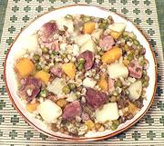

|
Karelian Pork Pot StewFinland - Pirona | ||||
| Serves: Effort: Sched: DoAhead: |
5 main ** 1 day Yes |
A delicious stew! In old Finland this would be made up in a heavy pot and baked in a low oven or under ashes, but today we can use a slow cooker more conveniently (see Note-3). | |||
|
1/2 1/2 1-1/2 2 10 8 5 1/2 1-1/2 |
c c # # oz oz c c t |
Dried Green Peas Brown Lentils Pork (1) Potatoes, waxy Turnip Rutabaga Water Barley (2) Salt |
In olden times it was often mashed and served as a porridge but is today served as a stew. Do-Ahead: - (8 hrs to overnight)
|